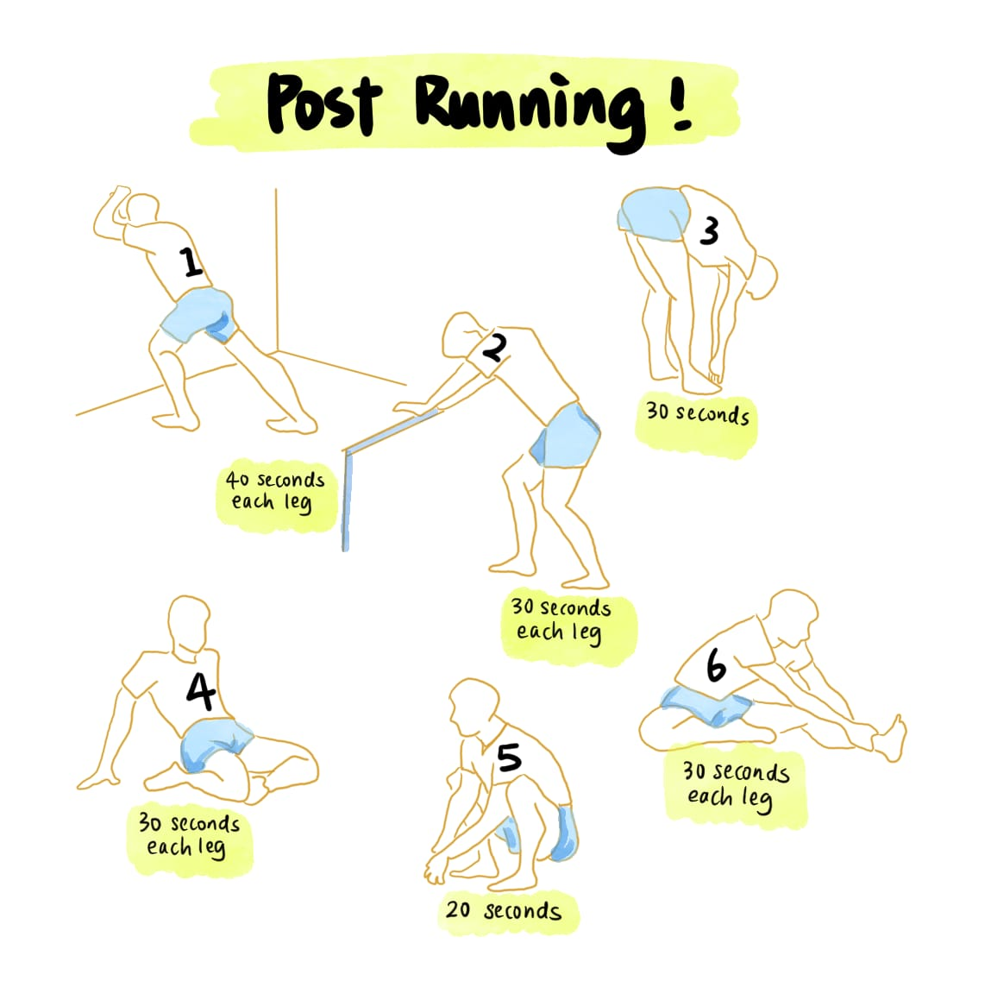

For joggers who prefer a structured run, this page offers downloadable resources featuring real jogging paths in Klang and Kuala Lumpur, Malaysia. Whether you’re just starting out or looking to explore new routes, these maps are assistants which provide overview for the jogging path and understand more to the location’s nature.
Our frequent jogging routes include areas like Taman Rakyat Klang, Taman Botani Negara Shah Alam, and Titiwangsa Lake Gardens in KL.
! Extra Guidance !
While Jogging

Post-Running
